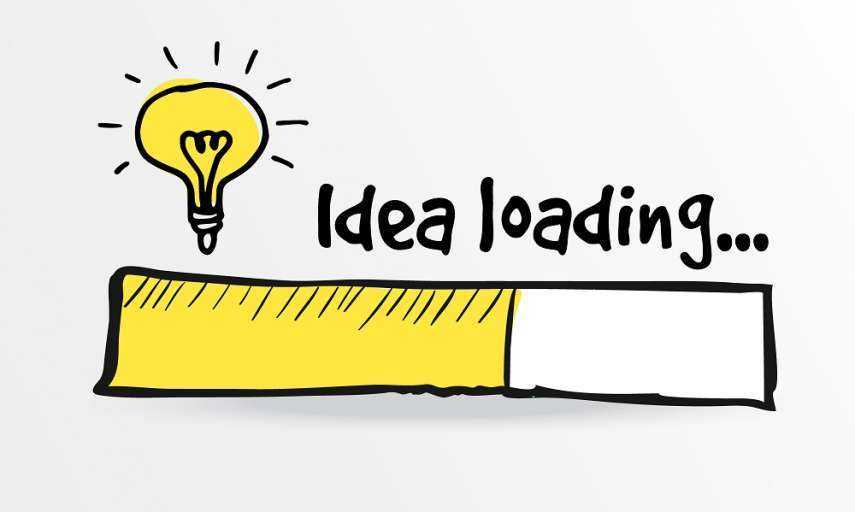
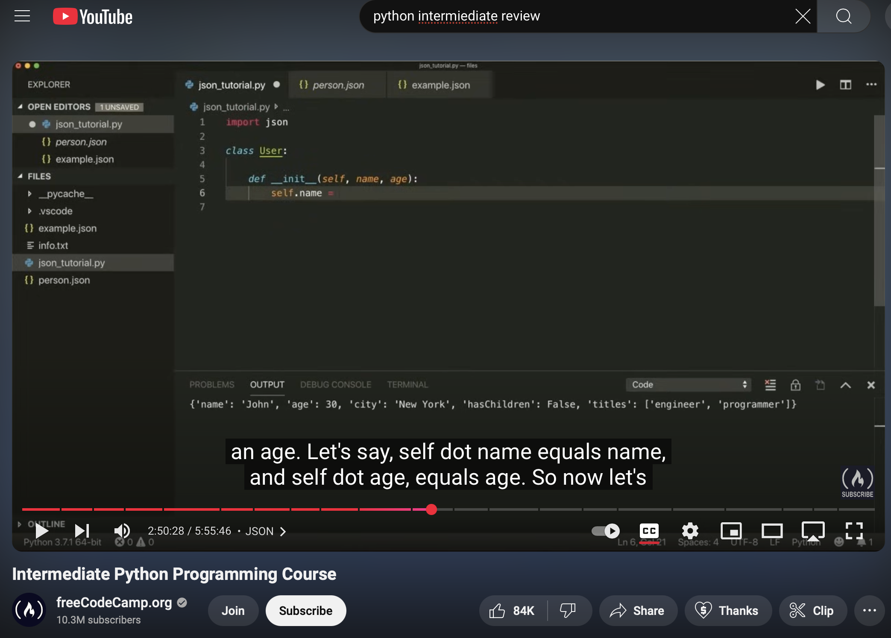
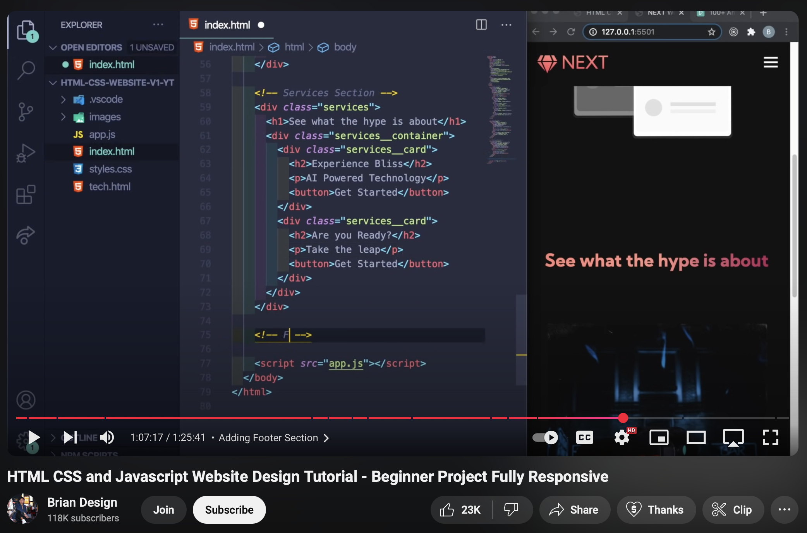

About Me
Hi Professor! For my lifehack project I have created a task manager script in python that I have been using for about a month now to keep track of all my assignments and meetings. Additionally, I also picked up some new coding skills, in particular, I learned how to create my own website. I have really enjoyed our class discussions this past semester and wanted to really branch out and do something completely new for this assignment. These coding skills I will carry with me forever as I continue to hack life.
My Journey
Step 1: Starting Out
To begin the project I was frankly pretty stuck regarding what part of my life I wanted to imbue with technology. At frst I had thought of building an app to track your calorie intake, but I quickly realized I am much more at peace when not tracking my calories... It was after this initial idea that I thought of building a Task Manager to help me keep track of job applications I was sending out.
Step 2: Developing the Task Manager
I started off reviewing python. I have taken a few python and coding courses at Emory, but felt the need to refresh myself on a couple key concepts. In particular the use of JSON files was a bit difficult to figure out.
Step 3: Learning to build webpage
I was unsure how I was going to put together my project. I felt that the task manager just by itself was not sufficient enough, but I also did not want to scrap it and start something new. I decided it would be interesting to learn a little CSS and HTML in order to build a website and thus present on my project via the webpage.